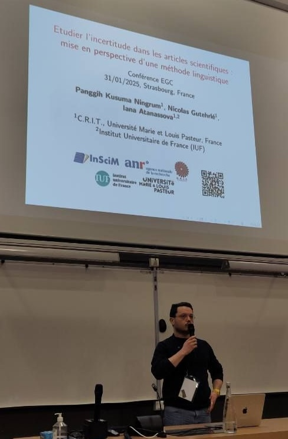
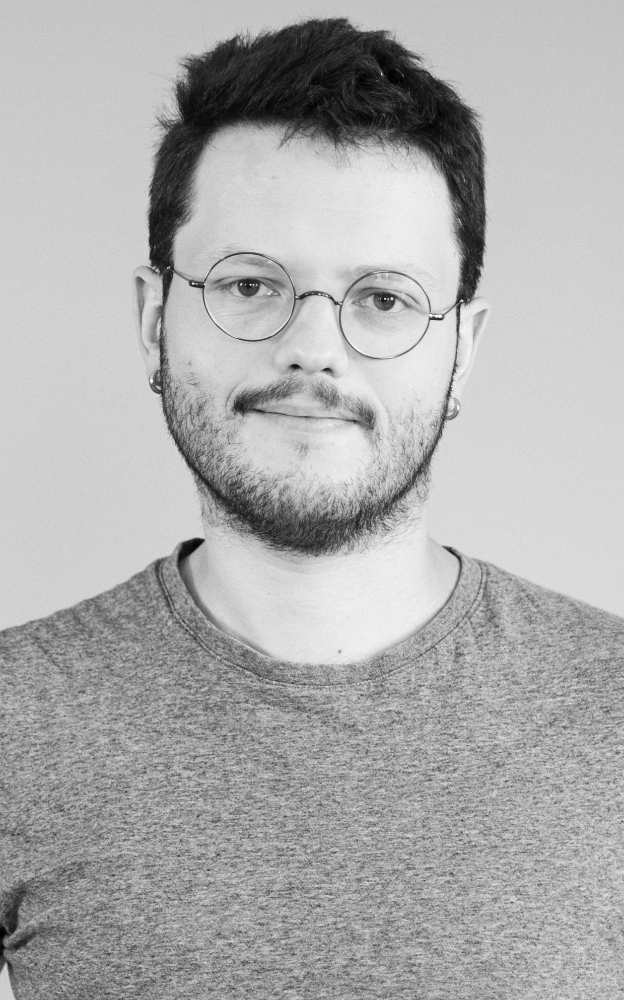

Modelling Uncertainty in Science
ANR InSciM Project Official Home Page
ANR InSciM Project is funded by French ANR JCJC 2021 - 2025, ANR-21-CE38-0003-01 (2021-2025).
About InSciM Project
As the world undergoes profound transformations, science is highly solicited, such as in the context of health crises (Covid-19), the reflection and dialogue on climate change, ecological and energy transformations, monetary transformation, humanitarian issues, or geopolitical crises. The perception of uncertainty in scientific discourse is therefore an important issue for all scientific activities. In science, the production of new knowledge uses rigorous methodological approaches based on the object of study and its disciplinary field. However, the use of tools or observations that produce a margin of error, as well as the use of abductive and inductive reasoning imply the presence of uncertainty, which can be specific to each discipline, linked to the object of the study and the methodologies that are used. Uncertainty in science is an integral part of the research process.
Creating a linguistic model of scientific uncertainty and tools for its annotation in articles across disciplines
The ANR InSciM project addresses the growing need to understand and model scientific uncertainty in the context of major global transformations such as health crises (e.g., Covid-19), climate change, and geopolitical issues. Scientific uncertainty is inherent in research processes across disciplines, stemming from the use of inductive and abductive reasoning, methodological limits, and tools that introduce error margins.
The project's core objective is to create a linguistic model of uncertainty in scientific articles across a range of disciplines, including Social Sciences and Humanities (SSH) and Science, Technology, and Medicine (STM). This interdisciplinary approach will make possible the development of Gold Standard annotated datasets, in order to build knowledge-based approaches for annotation and to train machine learning and deep learning models, ultimately leading to an automated tool capable of detecting and categorising uncertainty in scientific discourse.
In addition to theoretical outcomes, this work will have societal impacts by improving the dialogue between science, policy, and society. Understanding uncertainty in scientific findings is crucial for informed decision-making, particularly in public policy debates related to precautionary principles and scientific regulation. Thus, the tools developed in this project will offer practical solutions for a better transparency and communication in scientific discourse across various fields.
Methods and technologies used
The ANR InSciM project employs Natural Language Processing (NLP) techniques, linguistically-motivated tools and models, and machine learning to analyze scientific uncertainty in scholarly texts. The approach begins with the creation of interdisciplinary datasets composed of full-text scientific articles from disciplines in both Social Sciences and Humanities (SSH) and Science, Technology, and Medicine (STM). These datasets are analysed to identify linguistic patterns that express uncertainty by manual semantic annotation.
We propose a definition of the expression of uncertainty in scientific texts and a 5- dimensional annotation scheme that accounts for the different types of uncertainty expressed in articles. We produce annotated samples that serve as the foundation for constructing a linguistic ontology of uncertainty, represented in OWL (Web Ontology Language) for easy sharing and querying. We also produce Gold Standard annotated datasets in various disciplines.
An algorithm for the annotation of uncertainty is proposed using sets of linguistic patterns. The annotated datasets are also used to produce language models of uncertainty. The evaluation of both approaches is performed using precision, recall, and F-score metrics.
The project also develops web interfaces that allow researchers to identify and efficiently explore uncertainty in scholarly texts. These interfaces aim to facilitate interdisciplinary research by providing tools for semantic search and extraction of uncertainty-related information from scientific corpora.
Main results
The ANR InSciM project has produced significant results that contribute to the understanding and identification of scientific uncertainty across disciplines. The most important results can be categorized into three main areas:
1) Theoretical Results: The project developed a comprehensive 5-dimensional framework for the annotation of uncertainty, designed to reflect the various types of uncertainty expressed in scientific articles across different disciplines. We propose also a knowledge-based approach to the annotation of uncertainty in texts, base on sets of linguistic patterns. The performance of this approach is compared with that of different langage models obtained by deep learning techniques.
2) Practical Results: One of the key outcomes of the project is the creation of Gold Standard datasets, consisting of a large number of annotated sentences from scientific articles from a wide range of disciplines. These datasets are manually annotated using our annotation framework at the sentence level. These Gold Standard corpora will be made available to the research community for training machine learning models and testing new methods in NLP.
Building on these annotated datasets, the project proposed and evaluated knowledge- based and deep learning approaches for the annotation of uncertainty. The experimentation shows the robustness and scalability of the tools for the annotation of uncertainty.
In addition to language models, the project develops semantic search interfaces that allow researchers to explore uncertainty in large scientific corpora. Users can efficiently navigate and extract information on uncertainty from interdisciplinary datasets.
3) Societal Contributions: The project enhances the understanding of how uncertainty is communicated in scientific research, for both researchers and the general public. The tools and models developed as part of the project enable better analysis of scientific findings, improving the dialogue between science, policymakers, and society. By making the tools for detecting uncertainty available to the broader community, the project supports efforts to bridge the gap between scientific expertise and public understanding, ultimately fostering more informed decision-making processes.
Perspectives
Theoretical Advances: The linguistic ontology of uncertainty developed through this project provides a foundation for further research into the conceptualization and formalization of uncertainty in scientific discourse.
Another area for exploration is the observation of the use of uncertainty in scientific discourse from a disciplinary and diachronic point of view. Furthermore, uncertainty can be considered in relation with other categories of information occurring in scientific discourse, such as definitions or epistemic markers. Ultimately, we would be able to observe the mechanisms behind the creation of new knowledge and the ways it is expressed in various fields of research through the analysis of scientific corpora.
Practical Applications: The tools and datasets developed in the project make possible a variety of practical applications in Natural Language Processing (NLP), information retrieval, and scientometrics. Furthermore, the methods for uncertainty detection and annotation could be adapted to other types of scientific discourse, such as grant proposals, patents, and policy documents. The extension of the project’s tools to these areas could offer valuable insights for stakeholders in research funding, intellectual property, and governance.
The training of more sophisticated deep learning models is another key direction for future development. As more annotated data becomes available, models could be fine-tuned to achieve even higher levels of precision.
Interdisciplinary Collaboration: By making the annotated datasets, ontology, and tools available to the broader research community, the project encourages cross-disciplinary dialogue on how uncertainty is perceived and managed in different fields. Furthermore, there is potential to expand the project’s scope by collaborating with social scientists, philosophers of science, and cognitive scientists to further investigate how uncertainty is understood not just in scientific texts, but also in public communication, education, and media. This could lead to new frameworks for teaching and disseminating scientific knowledge, particularly in areas where uncertainty must be carefully communicated to non-expert audiences.
Societal Impact: One important perspective is the application of the project’s tools to enhance transparency in science communication. By identifying and categorizing uncertainty in scientific publications, the project provides a mechanism for policymakers, journalists, and the general public to better understand the limitations and confidence levels of scientific findings. This could lead to more informed debates on pressing societal issues such as climate change, pandemics, and technological innovation.
Funding
French ANR JCJC 2021 - 2025, ANR-21-CE38-0003-01
Partners
Université de Franche-Comté, France
Centre de Recherches Interdisciplinaires et Transculturelles (CRIT)
Institut Universitaire de France (IUF)
Latest News & Progress
Welcome, Anaïs, Fany and Wenjuan !
We are delighted to welcome as interns in our project Anaïs Lanier, 3rd year BSc student in the Foreign and Regional Languages, Literatures and Civilisations (LLCER), speciality in English, as well as Fany Montay and Wenjuan Li, 2nd year students in the MSc Foreign and Regional Languages, Literatures and Civilisations, speciality in Natural Language Processing, from the Université Marie et Louis Pasteur (France). Anaïs, Fany and Wenjuan will lend us a hand in our many works concerning the processing of scientific uncertainty.Presentation of our work at EGC 2025
 We've had the pleasure to present our paper « Etudier l’incertitude dans les articles scientifiques : mise en perspective d’une méthode linguistique » (Studying Uncertainty in Scientific Articles : Putting in Perspective a Linguistic Approach), at the « Extraction et Gestion des Connaissances 2025 » (EGC 2025) conference, which was held at INSA Strasbourg (France) from the 27th to the 31th of January 2025. We warmly address our thanks to the reviewers and the public for their comments and questions, as well as to the organisers of the conference for giving us the opportunity to present our works !Welcome Aboard, Nicolas!
In a significant boost to our innovative endeavors, our research project team is excited to announce the arrival of Nicolas Gutehrlé, who joins us as a Research Engineer. Bringing a wealth of knowledge and a proven track record of engineering excellence, Nicolas is set to play a pivotal role in advancing our research goals. We're thrilled to have Nicolas on board, not just for his technical skills, but also for the fresh perspective and collaborative spirit he brings to our team.
Let's extend a warm welcome to Nicolas!
Stay tuned for the exciting developments we're sure to achieve with Nicolas as part of our team.
Welcome to Our Team, Marine and Maya!

As we continue to expand and embark on more ambitious project, our team is thrilled to welcome two new faces who will be joining us as interns. Please give a warm welcome to Marine Potier and Maya Mathie, two incredibly talented and enthusiastic individuals who are set to make significant contributions to our endeavors.
Together, Marine and Maya will be working on various aspects of the project, offering fresh insights and helping us achieve new milestones. Their roles as interns are crucial, providing them with hands-on experience while significantly contributing to our project's success.
We believe that the fresh perspectives and innovative ideas that Marine and Maya bring will be a huge asset to our team. We're excited to see how their contributions will shape our projects and help us achieve our goals.
Join us in warmly welcoming Marine Potier and Maya Mathié to our project team. We look forward to a fruitful collaboration and the remarkable achievements we will accomplish together.
Welcome aboard, Marine and Maya!
Unleashing the Power of UnScientify: Detecting Uncertainty in Scientific Text - Join Us at EEKE-AII 2023 Workshop!
We are delighted to announce our team's participation in the esteemed EEKE-AII 2023 Workshop, where we will present our groundbreaking demo app called UnScientify. This interactive system revolutionizes scientific text analysis by detecting uncertainty at the sentence level. With a fine-grained annotation scheme and an automated pipeline combining pattern matching and authorial reference checking, UnScientify offers interpretability and facilitates information retrieval, text mining, and scholarly document processing. Join us at the workshop on June 26–27, 2023, as we unveil UnScientify's potential to advance scientific comprehension.
Together, Marine and Maya will be working on various aspects of the project, offering fresh insights and helping us achieve new milestones. Their roles as interns are crucial, providing them with hands-on experience while significantly contributing to our project's success.
We warmly welcome Marine and Maya to our team and look forward to a journey filled with learning, growth, and remarkable achievements. Let's make great things happen together!
InSciM Progress Report Meeting 2023
It is with great anticipation that the forthcoming virtual progress report meeting with the esteemed members of the Project Advisory Board is announced. Scheduled for the 19th of June, 2023, this assembly represents the second occasion on which the latest advancements and milestones achieved within the research project will be presented for discussion.
To facilitate effective discussions, we encourage all board members to download the presentation slides from the provided link: Presentation 1, Presentation 2. These slides offer a comprehensive overview of our progress, key findings, and future directions. We value the expertise and guidance our board members bring to the table, and their input is crucial in shaping the trajectory of our research. We sincerely appreciate their continued support and look forward to a productive and insightful session.
For any inquiries or assistance regarding the progress report meeting, please contact our project team. Thank you for your ongoing commitment, and we eagerly anticipate this valuable opportunity to engage with our distinguished Project Advisory Board members.
Research Visit & Collaboration with GESIS

We are excited to provide an update on the progress of InSciM project. Over the past three months, our PhD student, Panggih Kusuma Ningrum, had the invaluable opportunity to participate in a research visit program at GESIS – Leibniz-Institute for the Social Sciences in Germany. Under the guidance of Dr. Philipp Mayer, the esteemed team leader of the Information & Data Retrieval division at the GESIS department Knowledge Technologies for the Social Sciences (WTS), our collaboration focused on employing natural language processing (NLP), text mining, and analysis techniques to examine scientific uncertainty in the empirical social science domain.

During the program, we achieved significant milestones. Firstly, we successfully curated and annotated a comprehensive dataset in the field of empirical social science, providing a valuable resource for future studies in this area. Additionally, we developed the UnScientify app, a demonstrative interactive system designed to detect and analyze scientific uncertainty in scholarly full-text articles. This tool not only showcases our progress but also has the potential to aid researchers in understanding and addressing uncertainty in scientific literature.
Furthermore, we are delighted to announce that the research paper from this collaboration has been accepted for presentation at the Joint Workshop of the 4th Extraction and Evaluation of Knowledge Entities from Scientific Documents (EEKE2023) and the 3rd AI + Informetrics (AII2023), which will be held as part of the ACM/IEEE Joint Conference on Digital Libraries 2023 in Santa Fe, New Mexico, USA, from June 26 to 30, 2023. This recognition not only validates the significance of our work but also provides an excellent platform to share our findings with the broader scientific community.
We extend our gratitude to Dr. Philipp Mayer and the team at GESIS for their invaluable support and collaboration. We are confident that our research project will contribute to advancing the understanding of scientific uncertainty and its implications in the empirical social science field.
Breaking News: Join Us at ISSI 2023 to Explore our Latest Research Findings!
We are thrilled to announce that our research paper entitled "Investigating Uncertainty in Scholarly Articles: An Interdisciplinary Annotation Framework" has been accepted for presentation at the esteemed 19th International Conference of the International Society for Scientometrics and Informetrics (ISSI 2023) in Bloomington, Indiana, US. In this paper, we delve into the expression of uncertainty in academic articles and propose a novel interdisciplinary annotation framework that encompasses five dimensions for categorizing uncertain sentences. Through the analysis of a diverse corpus from various disciplines, we conduct experiments on two distinct sets of sentences: one obtained via uncertainty cue mapping and another through manual annotation of randomly selected articles. Our findings unveil the distribution of uncertainty types across journals and categories, while also highlighting the potential for automation in certain aspects of the annotation process. We are honored to share our research with the scholarly community at ISSI 2023 and look forward to engaging in insightful discussions on this crucial topic.
Team
Principal Investigator
 |
|---|
| Iana ATANASSOVA, Ph.D. |
| CRIT, University of Franche-Comté, IUF, France |
Ph.D. Fellow
 |
|---|
| Panggih Kusuma NINGRUM |
| CRIT, University of Franche-Comté, France |
Research Engineer
|  |
|---|
| Nicolas GUTEHRLÉ |
| CRIT, University of Franche-Comté, France |
Intern
| Marine POTIER |
| CRIT, University of Franche-Comté, IUF, France |
Intern
| Maya MATHIE |
| CRIT, University of Franche-Comté, France |
Project Advisory Board
 |
 |
||
|---|---|---|---|
| Pr. Sylviane CARDEY | Pr. Laurence GAIDA | Pr. Christophe ROCHE | Dr. Guillaume CABANAC |
| CRIT, University of Franche-Comté, France | CRIT, University of Franche-Comté, France | LISTIC, University Savoie Mont Blanc, France | IRIT, University of Toulouse, France |
 |
 |
 |
|---|---|---|
| Dr. Marc BERTIN | Dr. Michael FARBER | Dr. Isabelle DROUET |
| ELICO, University Claude Bernard Lyon 1, France | Karlsruhe Institute of Technology, Germany | SND, Sorbonne University, France |
Publications
2025
- Panggih Kusuma Ningrum, Nicolas Gutehrlé, Iana Atanassova (2025). Etudier l'incertitude dans les articles scientifiques : mise en perspective d'une méthode linguistique. In : Extraction et Gestion des Connaissances 2025, Thomas Guyet, Baptiste Lafabrègue, Aurélie Leborgne, Jan 2025, Strasbourg, France.
2024
- Nicolas Gutehrlé, Panggih Kusuma Ningrum, Iana Atanassova (2024). Annotated Dataset for Uncertainty Mining : Gold Standard [Data set]. Zenodo. https://doi.org/10.5281/zenodo.14134215
- Christophe Malaterre, Iana Atanassova, Francis Lareau, Panggih Kusuma Ningrum (2024). Navigating the Unknown: A Textual Analysis of Uncertainty in Astrobiology Research. Congress of the Canadian Society for the History and Philosophy of Science (CSHPS), Canadian Society for the History and Philosophy of Science (CSHPS), 2024, Montréal (Québec), Canada.
- Panggih Kusuma Ningrum, Iana Atanassova (2024). Annotation of scientific uncertainty using linguistic patterns. Scientometrics (2024). https://doi.org/10.1007/s11192-024-05009-z
- Iana Atanassova, Marine Potier, Maya Mathie, Marc Bertin, and Panggih Kusuma Ningrum (2024). CriticalMinds: Enhancing ML Models for ESG Impact Analysis Categorisation Using Linguistic Resources and Aspect-Based Sentiment Analysis. In: Proceedings of the Joint Workshop of the 7th Financial Technology and Natural Language Processing, the 5th Knowledge Discovery from Unstructured Data in Financial Services, and the 4th Workshop on Economics and Natural Language Processing, pages 248–253, Torino, Italia. Association for Computational Linguistics.
- Iana Atanassova, Marc Bertin (2024). Breaking boundaries in citation parsing: a comparative study of generative LLMs and traditional out-of-the-box citation parsers. Bibliometric-enhanced Information Retrieval (BIR 2024), collocated with ECIR 2024, ECIR 2024, 2024, Glasgow (Ecosse), United Kingdom.
- Iana Atanassova (2024). Approches linguistiques pour la fouille d'articles scientifiques (conférence invitée). TextMine’24, EGC 2024, Jan 2024, Dijon, France.
2023
- Iana, Atanassova, & Marc Bertin (2023). Multilinguism in References: a Study of the ISTEX Dataset. In: 19th International Conference of the International Society for Scientometrics and Informetrics (ISSI-2023), International Society for Scientometrics and Informetrics, Jul 2023, Bloomington, Indiana, United States. pp.9-10, https://doi.org/10.5281/zenodo.10655371
- Panggih Kusuma Ningrum, Iana Atanassova (2023). Scientific Uncertainty: an Annotation Framework and Corpus Study in Different Disciplines. In: 19th International Conference of the International Society for Scientometrics and Informetrics (ISSI 2023), Bloomington, Indiana, US.
- Panggih Kusuma Ningrum, Philipp Mayr, Iana Atanassova (2023). UnScientify: Detecting Scientific Uncertainty in Scholarly Full Text. In: Joint Workshop of the 4th Extraction and Evaluation of Knowledge Entities from Scientific Documents (EEKE2023) and the 3rd AI + Informetrics (AII2023), part of the ACM/IEEE Joint Conference on Digital Libraries 2023, Santa Fe, New Mexico, USA, June 26 - 30, 2023.
- Marc Bertin, Iana Atanassova (2023). Citing Foreign Language Sources : an Analysis of the S2ORC Dataset. 13th International Workshop on Bibliometric-enhanced Information Retrieval @ 45th European Conference on Information Retrieval, Apr 2023, Dublin (IR), Ireland. pp.66-76.
- Panggih Kusuma Ningrum, Iana Atanassova (2023). Dataset for Multidisciplinary Uncertainty Mining - ver1 (Version 1) [Data set]. Zenodo. https://doi.org/10.5281/zenodo.8024787.
Preliminary Results
2022
- Iana Atanassova, Marc Bertin, Philipp Mayr (2022). Editorial: Mining Scientific Papers, Volume II: Knowledge Discovery and Data Exploitation. In: Frontiers in Research Metrics and Analytics, 7, 911070. https://doi.org/10.3389/frma.2022.911070
2021
- Iana Atanassova, François-C. Rey (2021). Categorising Scientific Uncertainty in Papers. In: SciNLP 2021 - 2nd Workshop on Natural Language Processing for Scientific Text, 8 October 2021.
2018
- Iana Atanassova, François-C. Rey and Marc Bertin (2018). Studying Uncertainty in Science: a distributional analysis through the IMRaD structure. In: 7th International Workshop on Mining Scientific Publications (WOSP) at LREC 2018. Miyazaki, Japan, May 2018.
- François-C. Rey, Marc Bertin, & Iana Atanassova (2018). Une étude de l’incertitude dans les textes scientifiques: vers la construction d’une ontologie. In: Terminologie & Ontologie: Théories et Applications - Actes de la conférence (TOTh 2018), pp. 229 242. Chambéry, France.
Contact
- E-mail: project.inscim@gmail.com, iana.atanassova@univ-fcomte.fr
- Twitter: @project_InSciM
- Address: Iana Atanassova - CRIT, 30 rue Megevand, 25000 Besançon, France